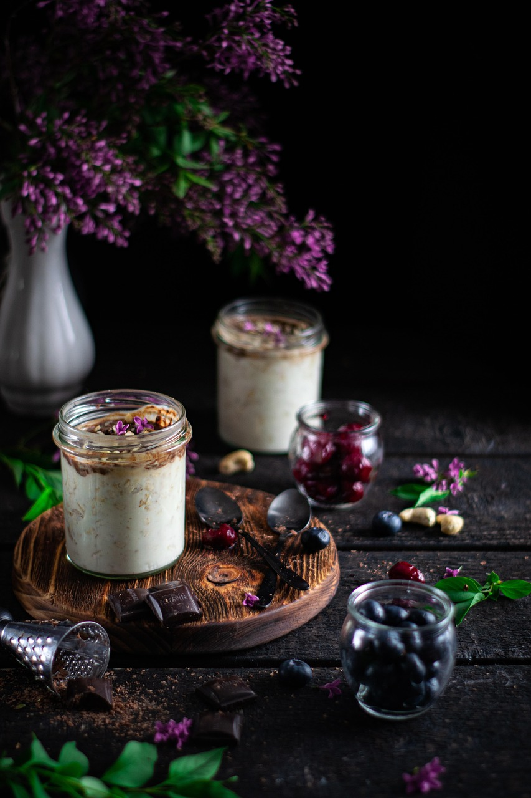

Att träna handlar inte bara om prestation, utan även om återhämtning, sömn och kostvanor. Genom att kombinera regelbunden fysisk aktivitet med smarta livsstilsval kan du öka både välmående och resultat. På den här sidan hittar du råd kring återhämtning, sömnvanor, stresshantering och grundläggande näringslära.
Sömn är avgörande för muskeluppbyggnad, hormonbalans och återhämtning. De flesta vuxna behöver mellan 7–9 timmars sömn per natt. Försök att skapa en regelbunden sömnrutin, undvik skärmar sent på kvällen och se till att ditt sovrum är mörkt och svalt.
En balanserad kost ger bränsle till både hjärna och muskler. Försök att äta varierat med fokus på grönsaker, fullkorn, protein och hälsosamma fetter. Undvik extrema dieter och sikta istället på långsiktiga vanor.
